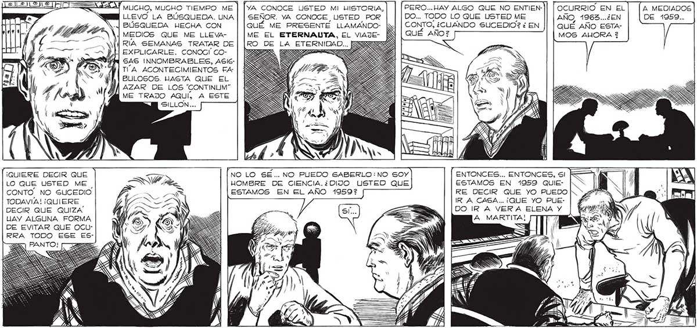

SÍ, NO TIENE USTED IDEA EN QUE SOLEDADES HE GRITADO, HE AULLADO SUS NOMBRES...NI A QUÉ SERES DE PESADILLA LESHE PREGUNTADO SI SABIAN ALGO DE ELLAS... ¿SIGUIO USTED BUSCANDO A ELENA Y A MARTITA ?2 YA ME ENTENDERAS, JUAN SALVO... ASÍ COMO HAY ENTRE LOS HOMBRES, POR SOBRE LOS SENTIMIENTOS DE FAMILIA O DE PATRIA, UN SENTIMIENTO DE SOLIDARIDAD HACIA TODOS LOS DEMAS SERES HLIMANOS, DESCUBRIRAS QUE TAMBIÉN EXISTE EN | Di ¡eante LAR TRE TODOS LOS SERES INTELIGENTES DEL UNIVERSO, POR MAS DIFERENTES | Go RATO EL QUE SEAN, SENTIMIENTOS DE SOLIDARIDAD, UN APEGO A TODO LO QUE SEA ESP | “Ano” siGuio RITU, QUE UNE A LOS MARCIANOS CON LOS TERRESTRES, A LOS “TRÍPEDOS” DE LABLANDO.CONRUMA DEL QUINTO PLANETA DE FIESO QUE VEGA, CON LOS “GLOBULOS” DE TENÍA EL LASKARIA,LA PATRIA DE LOS "GURBOS”.. CEREBRO DEMASIADO ANa GUSTIADO , PAA AS Cll -.. A RA PODER - z ; 0D) NN = ENTENDER BIEN LO QUE ME DECIA. te Y A e E K y 2 , 22 ZA | MUCHO, MUCHO TIEMPO ME | [YA CONOCE USTED MI UISTORIA, PERO... HAY ALGO QUE NO ENTIEN-)| | OCURRIO EN EL A MEDIADOS LLEVO LA BÚSQUEDA. UNA | | SEÑOR. YA CONOCE USTED POR DO... TODO LO QUE USTED ME AÑO. 1963...¿EN DE 1059... BÚSQUEDA HECHA CON QUÉ ME PRESENTE LLAMANDO- CONTO, ¿CUANDO SUCEDIO? ¿ EN QUÉ AÑO ESTAMEDIOS QUE ME LLEVA- ME EL ETERNAUTA, EL VIAJE- QUÉ AÑO? MOS AUORA 2 RIA SEMANAS TRATAR DE | |RO DE LA ETERNIDAD... 5552 | EXPLICARLE. CONOCÍ CO- AR él SAS INNOMBRABLES, ASIS: TA ACONTECIMIENTOS FA BLULOSOS. HASTA QUE EL AZAR DE LOS “CONTINLJM” ME TRAJO AQUÍ, A ESTE MN SILLON... E A a A. ) NN > NB ¡QUIERE DECIR QUE Traj NO LO SÉ.. NO PUEDO SABERLO:NO sOy ENTONCES... ENTONCES, sI LO QUE USTED ME | 4 HOMBRE DE CIENCIA.¿DIJO USTED QUE ESTAMOS EN 1059 QUIECONTO. NO SUCEDIO A ESTAMOS EN EL AÑO 1959? RE DECIR QUE YO PUEDO TODAVIA! ¡QUIERE d e IRA CASA... ¡QUE YO PUEDECIR QUE QUIZA | => DO IR A VERA ELENA Y HAY ALGUNA FORMA J i SA DE EVITAR QUE OCURRA TODO ESE ES359
